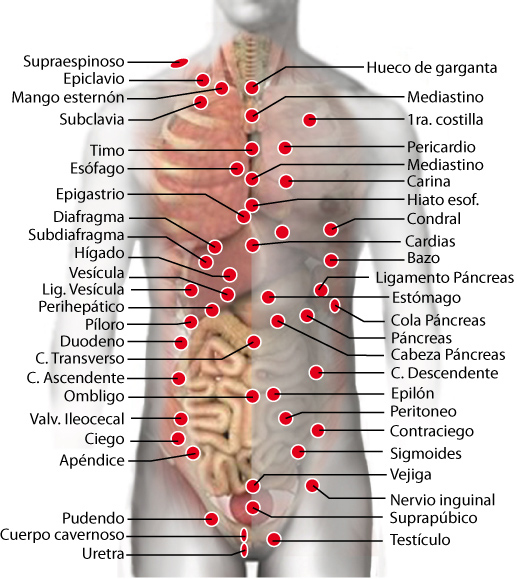

109. Mediastino
109. Mediastino
Mediastino
Proteus mirabillis
Pericardio:
Neumococo
Pericardio:
Asperjillus
Suprarrenales:
Enterobacter pneumoniae
Hipotálamo:
Sudoración
Mesocardio:
Proteus Mirabillis
110. Timo
110. Timo
Timo:
Inmunocompetencia
Recto:
VIH-Sida
Bazo:
Factor surfactante
Bazo:
Poliglobulia
Suprarrenal:
Disfunción hormonal
Pene:
Disfunción erectil
Parietal:
Rubeola
Hígado:
E-Coli
Cardias:
Legionela
Cardias:
Glóbulos blancos
Cardias:
Tos, abseso pulmonar
Apéndice:
Inmunocompetencia
Axila:
Alergias
Ovario/testículo:
Impaciencia
Hipófisis:
Avaricia
Occipital:
Celos
111. Agujero
111. Agujero
Agujero:
Giardia lamblia
112. Apófisis Xifoide
112. Apófisis Xifoide
Apófisis Xifoide:
Tiña en manos
113. Hiato esofágico
113. Hiato esofágico
Esófago:
Helicobacter pilori
Testículo:
Helicobacter pilori
Esófago:
Enterobacter Pneumoniae
Hiato esofágico:
Mucor, liquen plano
Lengua:
Triquinosis
114. Esófago
114. Esófago
Esófago:
Fasciolopsis Burski
Duodeno:
Reservorio Lepra
Colon descendente:
Mycoplasma Hominis
Subclavia:
Bacilo Paratyphi
Hiato E.:
Enterobacte pneumoniae
Vejiga (I):
Histoplasma capsulatum
115. Carina
115. Carina
Carina:
Aftosa
116. Pecho
116. Pecho
Pecho:
Neumococo
117. Parrilla costal ant.
117. Parrilla costal ant.
Parrilla costal ant.:
Ebola virus
118. Subclavia
118. Subclavia
Subclavia:
Difteria
Subclavia:
Coksackie v.
Esófago:
Estafilococo A
119. Mango esternón
119. Mango esternón
Mango esternón:
Coksackie v.
Mango esternón:
Mariquita (cromosomas)
120. Esternón
120. Esternón
Suprarrenales:
Hepatitis L
Suprarrenales:
Problemas de sangre
Bazo:
Enfisema, anemia
Hígado:
Hepatitis N
Timo:
Poliglobulia
121. Epiclavio
121. Epiclavio
Epiclavio:
Adenomegalia, linfadenitis
Epiclavio:
Mejora ventilación
122. Supraespinoso
122. Supraespinoso
Supraespinoso:
Tuberculosis
Cerebelo:
Neisseria Catarrhalis
123. Pericardio
123. Pericardio
Pericardio:
Estafilococo aureus (+)
Temporal (D):
Vacunas
Mastoides:
Presión torso
124. Coronarias
124. Coronarias
Pulmón:
Eestreptococo Alfa
Cardias:
Circulación sanguínea
125. Seno A ventricular
125. Seno A ventricular
Riñón (I):
Rubeola
Riñón (I):
Taquicardia, arritmia
126. Aorta
126. Aorta
Aorta:
Hipertensión, triglicéridos
127. Corazón
127. Corazón
Corazón:
Colesterol alto
Corazón:
Pesimismo, negatividad
Costilla:
Asfixia
Vesícula:
Envidia
Vejiga:
Resentimiento
Riñón (cl):
Amnesia
Estómago:
Anorexia
Hígado:
Ira explosiva
Escápula (I):
Mitomanía
Afin:
Valor
Páncreas:
Envidia
Suprapopliteo (I):
Actinomices
128. Botón aórtico
128. Botón aórtico
Pericardio:
Hipertensión
Dorsal 7
Estreptococo C
129. Nanocardias
129. Nanocardias
Nanocardias:
Nanobacterium sanguineum
130 Vena coronaria
130 Vena coronaria
Tendón pectoral:
Estafilococo aureus (+)
131. 1ra. Costilla
131. 1ra. Costilla
1ra. Costilla
Trycophyton
Vejiga:
Histoplasma capsulatum
132. Pezón (D)
132. Pezón (D)
Gemelo (I)
Reservorio
133. 7ma. Costilla
133. 7ma. Costilla
7ma. Costilla
Trycophyton, ronquidos
134. Costal
134. Costal
Costal:
Trycophyton
Costal:
Proteus mirabillis
Hígado:
Trepanozoma cruzi
Hígado:
Borrelia, hepatitis F
Costohepático:
Borrelia, hepatitis F
135. Costal anterior
135. Costal anterior
Costal Anterior:
Ebola virus
Colon desc.:
Zika
Riñón (I):
Zika
136. Condral
136. Condral
Condral:
Neumocistis carini
Condral:
Proteus mirabillis
137. Diafragma
137. Diafragma
Diafragma:
Cándida albicans
Riñón (hl):
Brucela abortus
138. Subdiafragma
138. Subdiafragma
Subdiafragma:
Reservorio universal
139. Costo diafrag.
139. Costo diafrag.
Costo diafragmático:
Trepanozoma cruzi
140. Cardias
140. Cardias
Píloro:
Estreptococo c
Suprarrenales:
Estreptococo beta h.
Esófago:
Enterobacter pneumoniae
Temporal:
Priones
Testículo (D):
Helicobacter Pylori
Vejiga (D):
Helicobacter Pylori
Vejiga:
Resentimiento
Páncreas:
Envidia
141. Pectoral
141. Pectoral
Pectoral:
Mycoplasma pneumoniae
Pulmón:
Mycoplasma pneumoniae
Cuadriceps (hl):
Equilibrio energético
142. Estómago
142. Estómago
Estómago:
Disfunción del estómago
Píloro:
Clostridium perfringes
Bulbo:
Hemiplejia
Corazón:
Moxarella catarrhalis
Corazón:
Polifagia (gula)
Hígado:
Polifagia (gula)
Cola de Páncreas:
Intoxicación
Páncreas:
Intoxicación
Páncreas:
Cansancio
Colon transverso:
Clamidia tucans
Bazo:
Obesidad
Hígado:
Hepatitis M
Suprarrenales:
Sarampión
Vejiga:
Entamoeba histolítica
143. Cab. de páncreas
143. Cab.de páncreas
Cab. de páncreas
Bordetella pertusi
Píloro:
Clostridium dificile
Punta de páncreas:
Adenovirus36
Hígado:
Estafilococo aureus (+)
Suprarrenales:
Estafilococo aureus (+)
Estómago:
Alergias, secreción alcalina
Pleura:
Micosis vías aereas
Vejiga (I):
Trastornos de lenguaje
144. Páncreas
144. Páncreas
Páncreas:
Pancreatitis
Duodeno:
Anisakis
Cola de páncreas:
Adenovirus 36
Hígado:
Obesidad, bajar de peso
Estómago:
Alergias alimentarias
Corazón:
Envidia
Bazo:
Equinococo granuloso
Utero:
Hijo de sexo no deseado
145. Cola de Páncreas
145. Cola de Páncreas
Hígado:
Botulismo
Riñón (I):
Botulismo
Riñón (I):
Acido úrico
Duodeno:
Anisakis
Colon descendente:
Anisakis
Gluteo:
Diabetes
146. Cond. de páncreas
146. Cond. de páncreas
Riñón (I):
Diabetes
Riñón (I):
Problemas mentales
147. Lig. de páncreas
147. Lig. de páncreas
Bazo:
Virus del Nilo
Colon Desc.:
Virus VK
Colon Desc.:
Fiebre amarilla
148. Peripancreático
148. Peripancreático
Peripancreático:
Rabia
149. Punta de páncreas
149. Punta de páncreas
Bazo:
Verruga común
Riñón (I):
Intoxicción por arsénico
suprailiaco:
Rosacea púrpura
150. Amp. hematopancreática
150. Amp. hematopancreática
Riñón:
Virus VK
151. Bazo
151. Bazo
Bazo:
Yersinia pestis
Bazo:
Disfunción del bazo
Duodeno:
Leucemia
Hígado:
Brucelosis
Hipotálamo:
Pereza
Pulmón:
Rubén, reservorio
Punta de páncreas:
Verruga común
Suprarrenales:
Rotavirus
Vejiga:
Endolimax Nana
Timo:
Poliglobulia
152. Hígado
152. Hígado
Hígado:
Hepatitis C, tóxica
Descendente:
Hepatitis A
Riñón:
Abseso amebiano
Riñón (I):
Entamoeba histolytica
Píloro:
Enterovios vermicularis
Píloro:
Listeria
Suprarrenales:
Adenovirus
Riñón (D):
Borrelia
Riñón (D):
Cirrosis
Cola de páncreas:
Botulismo
Páncreas:
Cansancio físico
Páncreas:
XMRV virus
Corazón:
Ira, perturbación
Bazo:
Brucela, falsa leucemia
Duodeno:
Chlamydia trachomatis
Parietal (I):
Hepatitis C
Pleura (D):
Orthohepadna v., Hepatitis B
Colon Transv.:
Cólera
Nervio inguinal:
Roseola
153. Conducto vesícula
153. Conducto vesícula
Riñón (D):
Espiroqueta
154. Vesícula
154. Vesícula
Vesícula:
Reservorio
Riñón (D):
Catarro común
Corazón:
Envidia
Escáupla:
Desinflama vesícula
Paratiroides:
Cálculos en vesícula
Riñón:
Dolor de cálculos
Vagina:
Envidia
155. Vena Porta
155. Vena Porta
Porta:
Klebsiella Pneumniae
156. Perihepático
156. Perihepático
Perihepático:
Morganela Tifo
Perihepático:
Anorexia
Costohepático:
Morganela Tifo
157. Costohepático
157. Costohepático
Costohepático:
Borrelia
Costohepático:
Espiroqueta
Costohepático:
Alucinaciones
158. Lóbulo hepático
158. Lóbulo hepático
Vena mesentaria:
Papiloma virus
159. Lób. post. Hígado
159. Lób. post. Hígado
Hígado:
Memoria, concentración
Riñón:
Intoxicación (metales)
160. Borde Costal (D)
160. Borde Costal (D)
Hígado:
Borrelia
161. Cond. C. Hepático
161. Cond. C. Hepático
Colon descendente:
XMRV virus
162. Supra hepático
162. Supra hepático
Supra hepático:
Clostridium malignum
163. Retrohepático
163. Retrohepático
Retrohepático:
Toxacara, acaro
Riñón (D):
Toxacara, acaro
164. Ligamento hepático
164. Ligamento hepático
Costohepático:
Trepanozoma cruzi
Riñón (D):
Adenovirus, falso VIH
Riñón (I):
Influenza virus
Costohepático:
Diabetes (falsa)
165. Píloro
165. Píloro
Píloro:
Disfunción
Hígado:
Oxiuros
Riñón:
Entamoeba histolytica
Lengua:
Cisticercosis
Gluteo:
Vellonela
Ano:
Hanta virus
Uretero:
Micelio intestinalis
Utero:
Micelio intestinalis
Estómago:
Espiroqueta (diabetes)
Estómago:
Autoestima
Colon transverso:
Polifagia/anorexia
166. Duodeno
166. Duodeno
Duodeno:
Disfunción
Cola de Páncreas:
Anisakis
Riñón (D):
Diabetes Mellitus
Riñón:
Solitaria
Píloro:
Endolimax nana
Laringe:
Micosis
Bazo:
Leucemia
Esófago:
Lepra
Riñón(I):
Chlamydia Trachomatis
Hígado:
Chlamydia Trachomatis
Tiroides:
Obesidad extrema
167. Yeyuno
167. Yeyuno
Riñón:
Campilobacter jejuni
168. Colon ascendente
168. Colon ascendente
Colon ascendente:
Disfunción
Colon ascendente:
Listeria
Riñón (D):
Influenza
Riñón (D):
Klebsiela pneumoniae
Hígado:
Klebsiela pneumoniae
Sacro:
Burlkholderia cepacia
169. Ciego
169. Ciego
Ciego:
Trichomona
Ciego:
Influenza
Riñón (D):
Klebsiela pneumoniae
170. Apéndice
170. Apéndice
Timo:
Inmunocompetencia
Lengua (I):
Viruela
Vena femoral:
Vaccinia virus
Vagina:
Vaccinia virus
Contraciego:
Herpes I
Pleura:
Estafilococo aureus (+)
Uretra:
Estafilococo aureus (+)
Cabeza femur (D):
Bordetella
171. Válvula iliocecal
171. Válvula iliocecal
Válvula iliocecal:
Disfunción
Prominencia occipital:
Reservorio
Riñón:
Trichomonas
Estómago:
Disfunción S.N. entérico
172. Colon transverso
172. Colon transverso
Colon transverso:
Disfunción
Vegija:
Cólera
Hígado:
Cólera
Colon Descendente:
Giardia Lamblia
Parietal:
Entamoeba histolytica
Ovario/testículo:
Materialismo
Riñón (I):
Zika
Sacro:
Chlamydia intestinalis
Cuadriceps:
Bacteria entérica
Párpado (I):
Congestión nasal
173. Colon descendente
173. Colon descendente
Colon descendente:
Enterobacter cloacae
Cuádriceps (I):
Schistosoma
Hígado:
Pasteurela, Hepatitis A
Riñón (I):
Pasteurela, Hepatitis A
Recto:
Obstrucción, Olazo
Recto:
Bordetella pertusis
174. Sigmoides
174. Sigmoides
Recto:
SV-40 virus
Testículo:
Campilobacter jejuni
175. Intestino delgado
175. Intestino delgado
Intestino grueso:
Herpes I, simplex
176. Intestino medio
176. Intestino medio
Vejiga:
Cólera
177. Contraciego
177. Contraciego
Contraciego:
Bordetella pertusis
Riñón (I):
Bordetella pertusis
178. Ombligo (Gen)
178. Ombligo (Gen)
Ombligo:
Trombosis
Ombligo:
Adicciones
Hígado:
Escherichia coli
Utero:
Complejo de Electra
Testículo:
Complejo de Edipo
Órgano afectado:
Gen, regeneración tisular
179. G. mesentéricos
179. G. mesentéricos
Hígado:
Chlamydia psittaci
Ganglios mesentéricos:
Enterovirus
Apéndice:
Enterovirus
180. Mesenterio
180. Mesenterio
Mesenterio:
Lepra, reservorio
181. Epiplón
181. Epiplón
Epiplón:
Estafilococo epidermidis
Epiplón:
Estafilococo aureus
182. Nutricia
182. Nutricia
Nutricia:
Reservorio de bacterias
183. Iliaco
183. Iliaco
Iliaco:
Disfunción intestinal, obesidad
Cápsula renal:
Bartonella
Borde cuádriceps:
Norwalk
184. Cresta iliaca
184. Cresta iliaca
Cresta iliaca:
Tripanosoma Gambi
Píloro:
Vibro haemophilus
Rama isquiática:
Estreptococo C
185. Cresta iliaca ant-sup.
185. Cresta iliaca ant-sup.
Cresta iliaca anterosuperior:
Obesidad
186 Uretero (ureter).
186 Uretero (ureter).
Uretero (ureter).:
Varicela
Riñón (hl):
Cálculos renales
187 Vejiga
187 Vejiga
Vejiga:
Estreptococo G
Ano:
Enetrococus fecalis
Bulbo:
Dengue hemorrágico
Intestino medio:
Cólera
Recto:
Herpes VII
Cresta iliaca antero sup.:
Obesidad
188. Línea arcuata
188. Línea arcuata
Línea arcuata:
Estafilococo A (-)
189. Suprapúbico
189. Suprapúbico
Suprapúbico:
htlv1 virus
5ta. Cervical:
Estafilococo aureus (+)
190. Peritoneo
190. Peritoneo
Pleura:
Reservorio de bacterias
Apéndice:
Resv. Gardenella
191. Nervio inguinal
191. Nervio inguinal
Nervio inguinal:
VIH 3
Hígado:
Herpes VI
Hígado:
Roseola
Utero, Testículo:
Cansancio físico
Artículación + Riñón (I):
Rehabilitación articular
192. Pudendo
192. Pudendo
Pudendo:
Parotiditis
Pudendo:
Paramixovirus
193. Uretra
193. Uretra
Uretra:
Chlamydia trachomatis
Uretra:
Coronavirus
Clítoris:
Espiroqueta
Pélvis:
Espiroqueta
Ureteros:
Mycoplasma pneumoniae
Ureteros:
Cándida albicans
194. Esfinter uretral
194. Esfinter uretral
Esfinter uretral:
Rabia
195. Próstata
195. Próstata
Recto:
Papiloma
Próstata:
Disfunción, prostatitis
196. Cruris
196. Cruris
Cruris:
Tiña en entrepierna
Mas pares...
Continuar...
Rastrear puntos de Dorso
P-21. Pulmón
P-21. Pulmón
Pulmón:
Culpa
Bulbo Raquideo:
Tristeza
Corazón:
Tristeza
P-22. Bronquio (D)
P-22. Bronquio (D)
Cerebelo:
Miedo a locura
Continuar
Continuar
Rastrear puntos de Dorso
Rastreo Torso
Cabeza
Cuello
Brazos
Torso
Dorso
Piernas
Otros
Lista puntos